Het bedieningsboek
Elk onderdeel van de touch-software: wie het gebruikt, wat het doet, waar het staat en waarom het er zo uitziet. Alle afbeeldingen komen uit de draaiende software, niet uit een ontwerp.
Het model in één plaat
Vier begrippen dragen de hele software. Snap je deze plaat, dan snap je elk scherm dat hierna komt.
Twee kanten van dezelfde app
Er is één bestand, studio/index.html, en dat
bestand heeft twee gezichten. Welk gezicht je ziet hangt af van één klik.
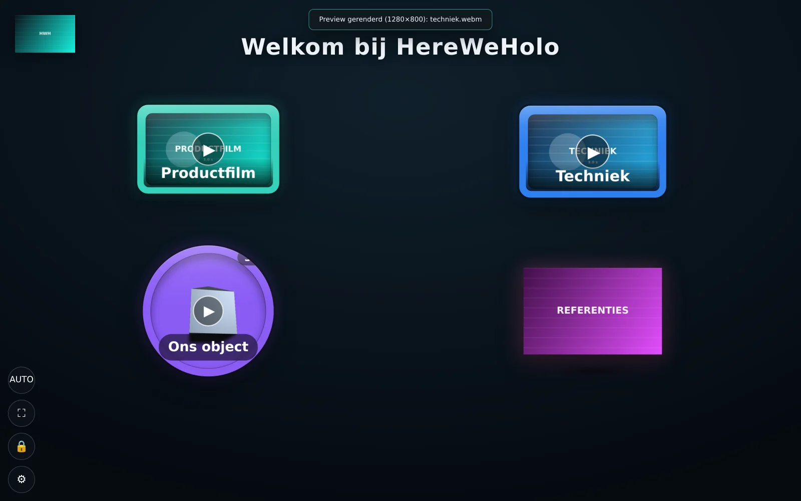
1 2 3 4- 1Het logo — staat er alleen als je er een instelt, en altijd op dezelfde hoek. Ingesteld bij Vormgeving.
- 2De knoppen — de tegels. Een tegel met een videovoorbeeld toont een ▶; een tegel die naar een scène gaat niet. Dat verschil is opzettelijk: de bezoeker ziet vooraf wat er gaat gebeuren.
- 3De titel van de scène — per scène apart in te stellen bij Scherm & scène.
- 4De vier bedieningsknoppen — oriëntatie, volledig scherm, het slot (verplaats-modus) en het tandwiel dat de editor opent. In kioskmodus zijn ze vrijwel onzichtbaar.
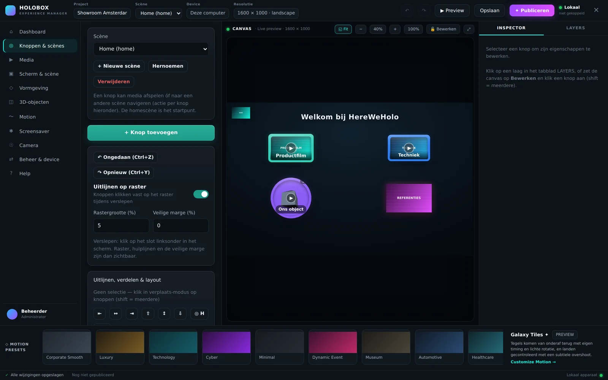
1 2 3 4 5 6 7De holobox staat vaak op een beursvloer of in een showroom zonder betrouwbaar internet. Eén HTML-bestand dat je dubbelklikt heeft geen server, geen installatie en geen netwerkverbinding nodig. Alles wat je toevoegt gaat de browseropslag van díe computer in en blijft daar staan.
De editor in zeven zones
De indeling is altijd hetzelfde, op elk tabblad. Links kies je waaraan je werkt, midden zie je het resultaat, rechts staan de eigenschappen van wat je hebt geselecteerd.
| Zone | Wat je er doet | Waarom hij daar zit |
|---|---|---|
| 1 · Topbalk | Project- en scènekeuze, ongedaan maken, preview, opslaan, publiceren, apparaatstatus. | Alles wat over het geheel gaat staat bovenaan en verandert nooit van plek. |
| 2 · Zijbalk | Elf tabbladen — de onderwerpen waarop je kunt werken. | Op volgorde van hoe je bouwt: eerst inhoud, dan uiterlijk, dan bedrijfsvoering. |
| 3 · Instellingen | De instellingen van het gekozen tabblad. | Eén kolom, altijd op dezelfde plek, zodat je nooit hoeft te zoeken. |
| 4 · Canvas | Live weergave van precies wat de holobox laat zien. | Geen aparte previewknop nodig: wat je verandert, zie je meteen. |
| 5 · Inspector | Eigenschappen van de geselecteerde knop, of de lagenlijst. | Contextgevoelig — leeg als je niets hebt geselecteerd, in plaats van grijze velden. |
| 6 · Motion-dock | De bewegingsstijl van de hele presentatie. | Beweging raakt álles, dus staat het los onderin en niet in één tabblad verstopt. |
| 7 · Statusbalk | Opslagstatus, publicatiestatus, gekoppelde apparaten. | Feiten die je wilt kunnen controleren zonder ergens op te klikken. |
De topbalk, van links naar rechts
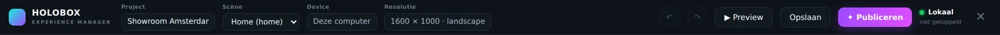
- 1Merk — klik erop om terug naar het Dashboard te gaan.
- 2Projectnaam — komt terug in het exportbestand en in het beheerpaneel.
- 3Scènekeuze — bepaalt welke scène je bewerkt. Het canvas volgt meteen.
- 4Ongedaan / opnieuw — Ctrl+Z en Ctrl+Y. Werkt over alle tabbladen heen.
- 5Preview — sluit de editor en toont het podium, precies zoals de bezoeker het krijgt.
- 6Opslaan — hoeft eigenlijk nooit: de software bewaart elke wijziging direct. De knop is er voor de zekerheid.
- 7Publiceren — controleert het ontwerp en zet het klaar op de box. Zie hoofdstuk 17.
- 8Apparaatstatus — “Lokaal” of de naam van de gekoppelde box, met een stoplichtje.
- 9Sluiten — terug naar het podium.
De statusbalk
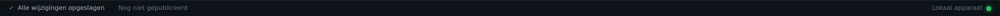
- 1Opslag — “Alle wijzigingen opgeslagen”. Staat er iets anders, dan is de schijf vol of de browseropslag geblokkeerd.
- 2Publicatie — wanneer je voor het laatst hebt gepubliceerd. “Nog niet gepubliceerd” betekent dat de box nog het vorige ontwerp draait.
- 3Apparaten — “Lokaal apparaat”, of het aantal boxen dat zich bij je server meldt.
Dashboard
De stand van zaken in één blik, plus drie knoppen om verder te gaan. Je bewerkt hier niets.
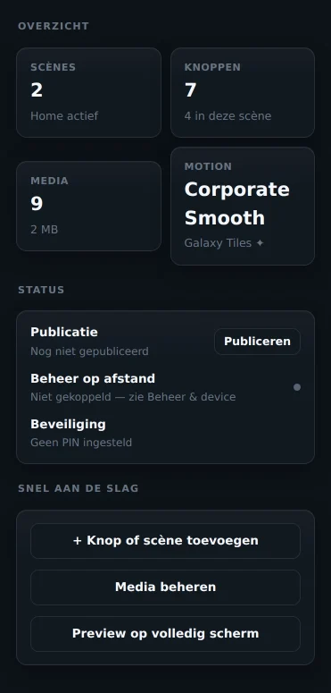
| Onderdeel | Wat het zegt |
|---|---|
| Scènes | Aantal schermen in dit project, met de actieve scène eronder. |
| Knoppen | Totaal over alle scènes, en hoeveel er in de huidige scène staan. |
| Media | Aantal bestanden en hoeveel opslag ze samen innemen. |
| Motion | De actieve preset, met daaronder of Galaxy Tiles aanstaat. |
| Publicatie | Datum en tijd van de laatste publicatie — of “Nog niet gepubliceerd”. |
| Beheer op afstand | Gekoppeld aan welke server. Het bolletje is groen bij contact, rood bij een fout. |
| Beveiliging | Of er een PIN op het menu zit. |
Knoppen & scènes
Het tabblad waar de presentatie ontstaat. Hier maak je scènes, voeg je knoppen toe en zet je ze op hun plek.
Een knop op zijn plek zetten
- Kies bovenin de scène waarin je wilt werken.
- Klik op + Knop toevoegen. Er verschijnt een knop midden in het canvas.
- Zet het canvas op Bewerken (het slotje in de canvasbalk). Pas dán kun je knoppen aanklikken en verslepen — anders speelt een klik gewoon de video af.
- Sleep de knop. Hij klikt vast op het raster als “Uitlijnen op raster” aanstaat.
- Zet het canvas terug op vergrendeld, zodat je per ongeluk niets verschuift.
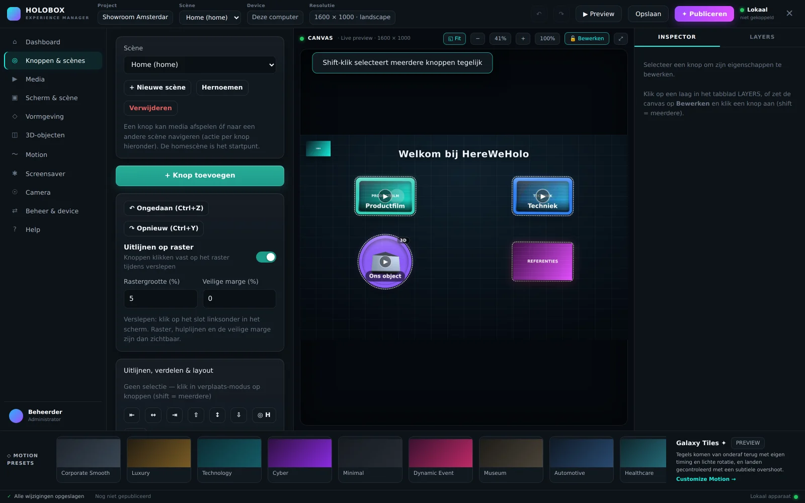
1 2 3 4- 1Fit — past het podium precies in het canvasvenster.
- 2Zoom — min, percentage, plus, 100 %. Handig om een knop op de pixel te zetten.
- 3Bewerken / vergrendeld — de belangrijkste schakelaar van dit tabblad. Vergrendeld = het canvas gedraagt zich als de holobox; Bewerken = je kunt selecteren en slepen.
- 4Uitvouwen — canvas schermvullend, voor precisiewerk.
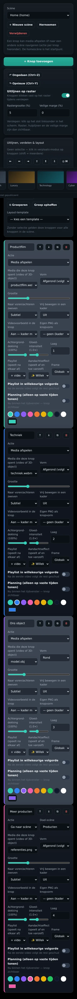
| Onderdeel | Wat het doet | Waarom |
|---|---|---|
| Scène | Kiest, hernoemt, maakt of verwijdert een scherm. | De eerste scène is de homescène — het startpunt en waar de box na rust naar terugkeert. |
| + Knop toevoegen | Zet een nieuwe knop midden in de scène, met de eerste media eraan gekoppeld. | Sneller beginnen dan met een leeg vlak. |
| Uitlijnen op raster | Knoppen klikken vast tijdens het slepen. | Zonder raster staat niets ooit echt recht — op 4K zie je 2 px verschil. |
| Rastergrootte (%) | De maaswijdte, als percentage van het scherm. | Percentages in plaats van pixels, want de box kan 4K of Full HD zijn. |
| Veilige marge (%) | Tekent een rand waarbinnen alles moet blijven. | Holoboxen snijden aan de randen af; deze marge voorkomt afgesneden knoppen. |
| Uitlijnen & verdelen | Links, midden, rechts, boven, midden, onder, en gelijkmatig verdelen. | Met de hand slepen tot het “ongeveer goed” staat is precies wat een scherm goedkoop laat lijken. |
| Groeperen | Bindt meerdere knoppen samen zodat ze als één blok bewegen. | Een rij van vier hoef je zo maar één keer te plaatsen. |
| Layout-template | Raster 2, 3 of 4 kolommen · één rij · één kolom · cirkel. | Een startpunt in één klik; daarna sleep je zelf verder. |
Uitlijnen en verdelen werken op de selectie. Heb je niets geselecteerd, dan gelden ze voor alle knoppen in de scène. Dat is bedoeld — maar het verschuift dus wel alles tegelijk.
Inspector & lagen
De rechterkolom. Hij toont de eigenschappen van precies dat wat je hebt aangeklikt — en niets anders.
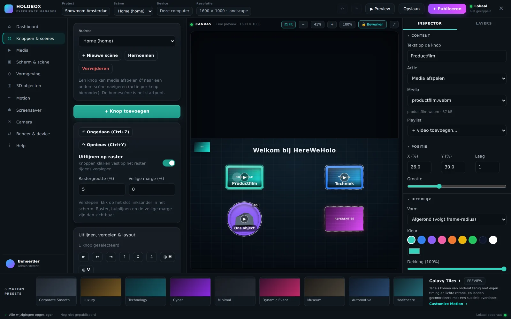
1 2- 1De geselecteerde knop — krijgt een accentrand in het canvas. Shift ingedrukt houden selecteert er meer.
- 2De inspector vult zich — met de eigenschappen van precies deze knop. Selecteer je niets, dan staat er uitleg in plaats van lege velden.
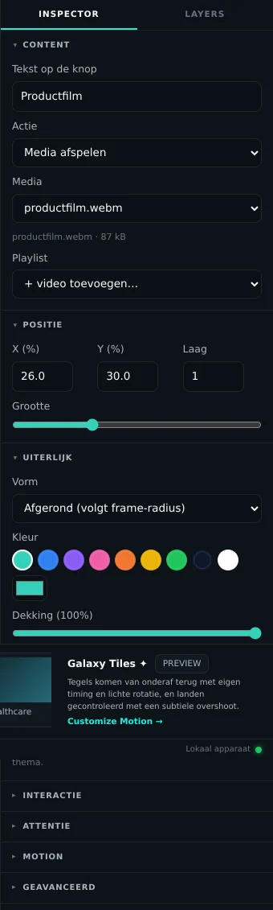
| Sectie | Velden | Waarvoor |
|---|---|---|
| Content | Tekst op de knop · Actie · Media of Adres · Playlist | Wat de knop is en wat hij doet. De velden wisselen mee met de gekozen actie: kies je “Website openen”, dan verschijnt een adresveld in plaats van een medialijst. |
| Positie | X (%) · Y (%) · Laag · Grootte | Exact typen wat je met slepen niet precies krijgt. “Laag” bepaalt wat er vóór ligt. |
| Uiterlijk | Vorm · Kleur · Dekking · Frame | Vorm bepaalt de omtrek van de knop én van het videovlak erin: rond, ovaal, afgerond of vierkant. |
| Interactie | Videovoorbeeld in de knop · Zweven · Vrij bewegen | Een voorbeeld in de tegel maakt duidelijk wat er speelt; zweven en drift geven leven zonder afleiding. |
| Attentie | Aandachtseffect per knop | Gloedpuls, lichtrand, flits of glans-veeg, om een voorbijganger te trekken. |
| Motion | Afwijkende entrance voor deze ene knop | Voor de held-tegel die eerder of anders mag landen dan de rest. |
| Geavanceerd | Dupliceren · Verwijderen · het interne ID | Het ID heb je nodig als je een geëxporteerd ontwerp met de hand naleest. |
Het lagenpaneel
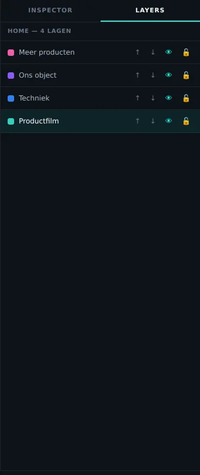
Het tweede tabblad van de inspector toont alle knoppen van de scène, bovenste laag eerst. Per regel: de kleur van de knop, zijn naam, en vier bedieningen — omhoog, omlaag, zichtbaar en vergrendeld.
Dit is de enige plek waar je een knop kunt selecteren zonder het canvas op Bewerken te zetten. Handig als knoppen elkaar overlappen: in de lijst kun je precies die ene aanwijzen die eronder ligt.
Bovenaan in de lijst = vooraan op het scherm. Dezelfde waarde staat als Laag in de inspector.
Media
De bibliotheek. Alles wat de holobox afspeelt of toont staat hier, en wordt in de browser zelf bewaard.
| Soort | Formaat | Wat de software ermee doet |
|---|---|---|
| Video | .mp4 H.264/H.265, tot 4K, liggend of staand |
Speelt af op de videokaart. Twee spelers wisselen elkaar af zodat een playlist naadloos doorloopt zonder zwart beeld. |
| Afbeelding | .png (met transparantie), .jpg,
.webp | Wordt het gezicht van de knop. Een PNG met transparantie geeft een knop in de vorm van de afbeelding zelf. |
| 3D — aanbevolen | .glb / .gltf |
Eén licht bestand met textures én animaties erin. Dit is het formaat om naar te vragen. |
| 3D — klassiek | .obj + .mtl + texturen |
Voeg de drie bestanden samen toe, anders vindt de viewer de textuur niet. |
| 3D — statisch | .fbx |
Wordt getoond zonder animatie. Heb je beweging nodig, converteer dan naar
.glb. |
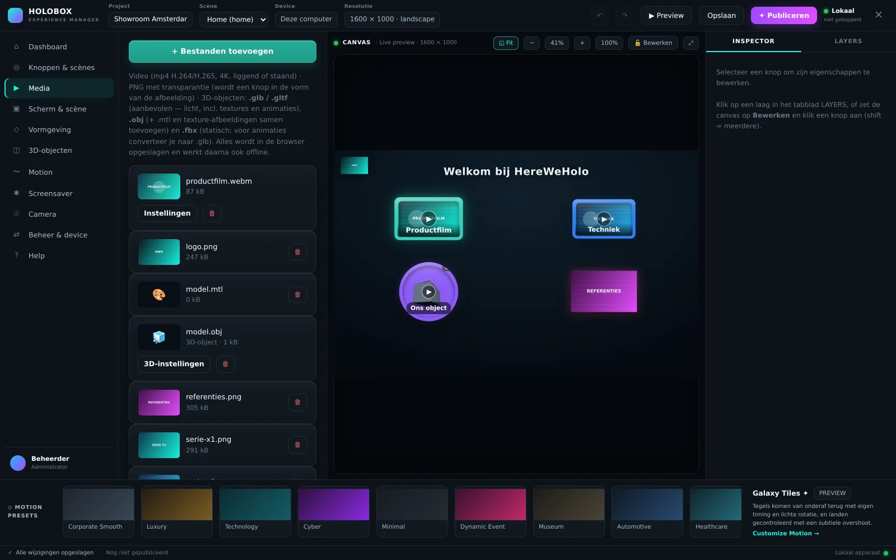
1 2 3 4- 1Bestanden toevoegen — meerdere tegelijk mag. Bij een .obj neem je .mtl en de texturen in dezelfde selectie mee.
- 2Instellingen (bij video) — opent begin- en eindtrim, volume, fade, herhalen en “laatste beeld vasthouden”.
- 33D-instellingen (bij een model) — schaal, hoogte, draai-as, kanteling en animatiesnelheid, per model apart.
- 4Verwijderen — vraagt om bevestiging. Knoppen die naar dit bestand wezen worden leeg, niet verwijderd.
In IndexedDB, de bestandsopslag van de browser, onder de naam hwh_studio.
Ze gaan dus niet mee in een geëxporteerd ontwerp — dat is een klein
JSON-bestand met alleen verwijzingen. Verhuis je naar een andere pc, neem dan de
mediabestanden apart mee en gebruik Media opnieuw koppelen.
Scherm & scène
Wat er op het scherm staat: de titel van deze scène, de achtergrond, het geluid en hoe bezoekers navigeren.
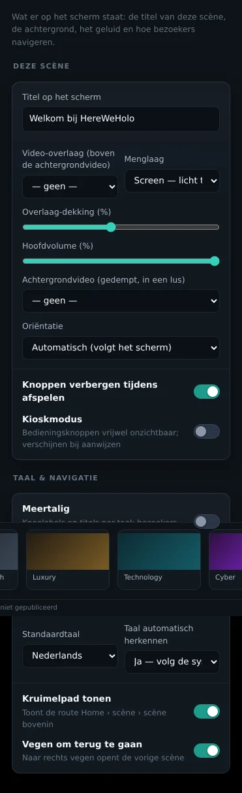
| Veld | Wat het doet | Waarom |
|---|---|---|
| Titel op het scherm | De kop boven de knoppen, voor deze scène. | Leeg laten mag: dan is het scherm alleen tegels. |
| Achtergrondvideo | Speelt in een lus achter de knoppen. | Geeft een holobox diepte zonder dat er iets te lezen valt. |
| Geluid bij de achtergrondvideo | Aan of uit, per scène, met een eigen volumeschuif. | Standaard uit: een lus die de hele dag geluid maakt is in de meeste ruimtes te veel. Aanzetten kan voor een sfeergeluid of een gesproken welkom. |
| Volume van de achtergrondvideo | 0 tot 100 %, wordt vermenigvuldigd met het hoofdvolume. | Zet je het hoofdvolume op 50 % en deze schuif op 40 %, dan klinkt de achtergrond op 20 %. De regel eronder rekent het voor. |
| Video-overlaag | Een tweede video bovenop de achtergrond. | Voor deeltjes, licht of rook — het effect dat een hologram “levend” maakt. |
| Menglaag | Screen, Normaal, Lighten of Overlay. | Screen telt licht op en is de holo-instelling: zwart wordt onzichtbaar. |
| Overlaag-dekking | Hoe sterk de overlaag meetelt. | Boven ongeveer 40 % gaat de overlaag de knoppen overstemmen. |
| Hoofdvolume | Het volume van alles, in procenten. | Ook op afstand te zetten vanuit het beheerpaneel — handig als de zaal vol is. |
| Oriëntatie | Automatisch, Portrait of Landscape. | Holoboxen hangen soms gekanteld. Deze instelling draait het beeld mee. |
| Knoppen verbergen tijdens afspelen | Tegels verdwijnen zodra een video start. | Zonder dit blijft de menulaag over de film heen liggen. |
| Kioskmodus | Maakt de vier bedieningsknoppen vrijwel onzichtbaar. | Publieke opstelling: bezoekers horen het tandwiel niet te zien. |
| Meertalig | Labels en titels per taal; bezoekers kiezen rechtsonder. | Eén ontwerp voor een internationale beurs, in plaats van twee projecten. |
| Taal automatisch herkennen | Volgt de systeemtaal van de pc. | Zet dit uit als de box altijd in één taal moet openen. |
| Kruimelpad | Toont Home › scène › scène bovenin. | Bij drie lagen of meer weet een bezoeker anders niet meer waar hij zit. |
| Vegen om terug te gaan | Naar rechts vegen opent de vorige scène. | Scheelt een terugknop in elke scène. |
Vormgeving
Hoe de experience eruitziet: huisstijl, typografie, logo en de kaders om de videoknoppen.
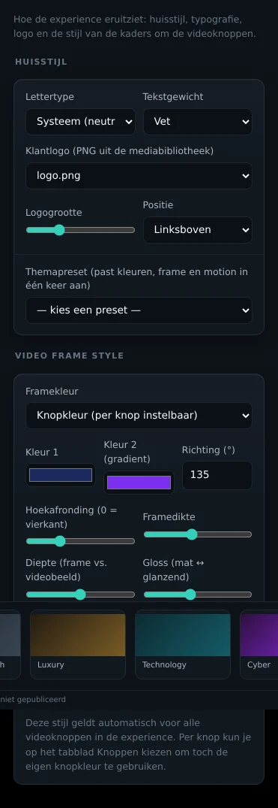
| Veld | Wat het doet | Waarom |
|---|---|---|
| Lettertype | Zes families: Systeem, Humanist, Grotesk, Geometrisch, Serif, Mono. | Families in plaats van namen, zodat het ook werkt op een pc zonder jouw huisstijl-font geïnstalleerd. |
| Tekstgewicht | Normaal tot extra vet. | Op een holobox lees je op afstand — vet is vaker goed dan je gewend bent. |
| Klantlogo | Een PNG uit de bibliotheek, met grootte en positie. | Vijf vaste posities in plaats van vrij slepen: zo staat het logo op elke scène op dezelfde plek. |
| Themapreset | Zet kleuren, frame en motion in één klik. | Corporate blauw, Luxury zwart/goud, Technology cyaan, Retail warm, Healthcare licht, Museum antraciet — een vertrekpunt, geen keurslijf. |
| Framekleur | Knopkleur, effen, verloop, of alleen omlijning. | Knopkleur laat elke tegel zijn eigen kleur houden; de andere drie maken alles gelijk. |
| Kleur 1 & 2, richting | Het verloop van het frame. | Alleen zichtbaar als je “Kleurverloop” hebt gekozen. |
| Hoekafronding | 0 = vierkant, hoger = ronder. | Deze waarde stuurt ook de vorm “Afgerond” van de knoppen zelf. |
| Framedikte | Hoe breed de rand om het videobeeld is. | Een dikker frame maakt de tegel fysieker; dunner maakt de video groter. |
| Diepte | Hoever het videobeeld in het frame ligt. | Dit is wat het “ingelegd” laat lijken in plaats van geplakt. |
| Gloss · Highlight · Schaduw | Mat tot glanzend, de reflectie, en de schaduw tussen frame en beeld. | Samen bepalen ze of een tegel van kunststof of van glas lijkt. |
| Gloed-intensiteit | De halo om de tegel. | Globaal ingesteld, per knop bij te stellen. Op een holobox is gloed wat de tegel laat zweven. |
3D-objecten
Instellingen die voor alle modellen gelden. Wat per model verschilt — schaal, hoogte, draai-as — stel je in bij Media.
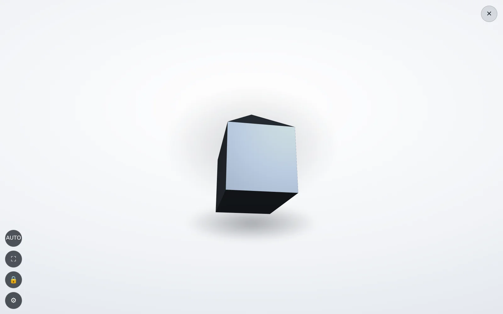
1 2- 1De zachte schaduw — ligt achter en onder het object en is met een schuif in te stellen. Zonder schaduw zweeft een model op een witte achtergrond in het niets.
- 2Sluiten — of automatisch na het ingestelde aantal seconden rust.
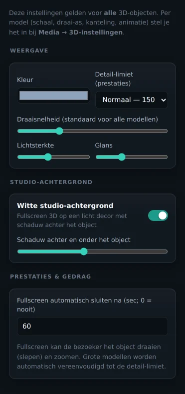
| Veld | Wat het doet | Waarom |
|---|---|---|
| Kleur | De basiskleur van modellen zonder eigen materiaal. | Een .obj zonder .mtl heeft geen kleur; zonder deze instelling zou hij zwart zijn. |
| Detail-limiet | 50k · 150k · 500k driehoeken, of onbeperkt. | Grotere modellen worden automatisch vereenvoudigd tot deze grens. 150k is de veilige standaard voor een showroom-pc. |
| Draaisnelheid | Hoe snel het model uit zichzelf ronddraait. | Standaard voor alle modellen; per model te overschrijven bij Media. |
| Lichtsterkte · Glans | Hoe fel en hoe spiegelend het oppervlak is. | Metaal wil glans, mat kunststof niet. |
| Witte studio-achtergrond | Zet het object schermvullend op een licht decor. | Productfoto-look. Uit betekent: op de donkere holo-achtergrond. |
| Schaduw | Sterkte van de schaduw achter en onder het object. | Te hard leest als een sticker, te zacht laat het object zweven. |
| Automatisch sluiten | Seconden rust waarna de viewer sluit; 0 = nooit. | Anders blijft de box na een bezoeker in het 3D-scherm hangen. |
Motion
Hoe alles beweegt. Eén preset zet de hele presentatie in dezelfde bewegingstaal; daaronder kun je alles tot op de milliseconde bijstellen.
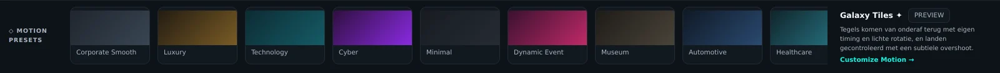
- 1Motion presets — het label van de balk.
- 2De presetkaarten — Corporate Smooth, Luxury, Technology, Cyber, Minimal, Dynamic Event, Museum, Automotive, Healthcare. Klik = meteen actief.
- 3Uitleg + Preview — wat de gekozen preset doet, met een knop om het één keer af te spelen, en een link naar de fijnafstelling.
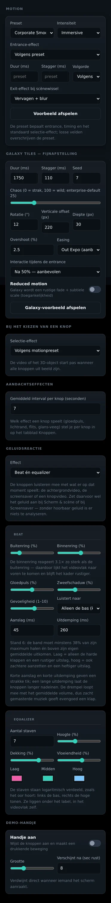
| Veld | Wat het doet | Waarom |
|---|---|---|
| Preset | Kiest entrance, timing en het standaard selectie-effect. | Eén keuze in plaats van tien schuiven. |
| Intensiteit | Subtle · Immersive · Showcase. | Vermenigvuldigt alles: afstanden, duren en doorschot. Museum wil Subtle, een beursstand Showcase. |
| Entrance-effect | Hoe de knoppen binnenkomen. | Overschrijft de preset. Leeg laten = de preset volgen. |
| Duur · Stagger | Hoe lang één knop erover doet, en hoeveel later de volgende begint. | Stagger is wat een scherm ritme geeft: alles tegelijk leest als een sprong. |
| Volgorde | In welke volgorde de knoppen landen. | De volgorde vertelt de bezoeker waar hij moet kijken, nog voor hij iets gelezen heeft. |
| Exit-effect | Hoe de scène verdwijnt bij een scènewissel. | Weggaan hoort de omkering van komen te zijn. |
Galaxy Tiles — fijnafstelling
Het huiseffect: tegels komen van onderaf terug met eigen timing en lichte rotatie, en landen gecontroleerd met een subtiele overshoot.
| Veld | Bereik | Wat het verandert |
|---|---|---|
| Duur | 1750 ms standaard | De volledige landing van één tegel. |
| Stagger | 110 ms | Het gat tussen twee opeenvolgende tegels. |
| Seed | 7 | Vaste willekeur. Dezelfde seed geeft altijd exact dezelfde landing — nodig om een video op te nemen. |
| Chaos | 0 – 100 (25) | Hoeveel de tegels van elkaar afwijken. 0 = strak in de maat, 100 = wild. |
| Rotatie | 12° | Kanteling waarmee een tegel binnenkomt. |
| Verticale offset | 220 px | Hoever van onderen ze vertrekken. |
| Diepte | 30 px | Hoeveel ze naar achteren beginnen. |
| Overshoot | 2,5 % | Hoever ze voorbij hun plek schieten. Eén keer voorbij, nooit twee — dat is het hele verschil. |
| Easing | Out Expo | De snelheidscurve. Out Expo is de aanbevolen: snel weg, zacht aan. |
| Interactie tijdens entrance | Na 50 % · Pas na afloop · Direct | Wanneer een tegel al aangeraakt mag worden. Na 50 % voelt reactief zonder half-gelande tegels te laten indrukken. |
| Reduced motion | aan / uit | Toegankelijkheid: Galaxy wordt een rustige fade met subtiele scale. |
Bij het kiezen van een knop
| Selectie-effect | Wat er gebeurt |
|---|---|
| Volgens preset | Volgt wat de motionpreset voorschrijft. |
| Tegel wordt videovlak | De aangeraakte tegel groeit door tot het beeld. Naadloos, geen zwart frame. |
| Filmisch zoomen | De gekozen knop komt naar voren, de rest vervaagt. |
| Opzij geschoven | De andere knoppen worden uit beeld getrokken. |
| De diepte in | De andere knoppen krimpen naar achteren. |
| Radiale burst | De andere knoppen vliegen alle kanten op. |
| Geen effect | Direct afspelen. |
De video of het 3D-object start pas wanneer alle knoppen uit beeld zijn. Anders kijk je naar het begin van een film door een menu heen.
Aandachtseffecten en het demo-handje
Screensaver
Wat de box doet als er niemand staat — en optioneel ook wat er achter de knoppen door speelt als er wél iemand staat.
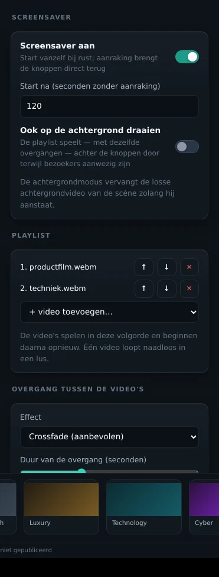
| Veld | Wat het doet | Waarom |
|---|---|---|
| Screensaver aan | Start vanzelf na rust; aanraking brengt de knoppen direct terug. | De terugweg moet onmiddellijk zijn, anders denkt de bezoeker dat de box niet reageert. |
| Start na | Seconden zonder aanraking. | 120 s is een goede showroomwaarde; op een drukke beurs mag het korter. |
| Ook op de achtergrond draaien | De playlist speelt — met dezelfde overgangen — áchter de knoppen door. | Vervangt zolang hij aanstaat de losse achtergrondvideo van de scène. |
| Playlist | De video's in volgorde; daarna opnieuw. | Eén video loopt naadloos in een lus, zonder zwart tussenbeeld. |
| Overgang | Crossfade, via zwart, zoom-crossfade (Ken Burns), schuiven van rechts — of geen. Met een instelbare duur van 0,3 tot 3 s. | Een harde cut tussen twee sferen leest als een storing. De overgang start zoveel seconden vóór het einde van de lopende video, zodat de wissel overlapt. |
| Geluid bij de screensaver | Aan of uit, met een eigen volumeschuif. Geldt voor de playlist — schermvullend én in de achtergrondmodus. | Tot versie 2.9.1 speelde de playlist altijd stil. Nu kan een sfeerfilm of een bedrijfsvideo gewoon geluid geven. |
| Volume van de screensaver | 0 tot 100 %, maal het hoofdvolume. | Zelfde rekensom als bij de achtergrondvideo; de regel eronder laat zien wat er werkelijk uit komt. |
| Nu testen | Start de screensaver meteen. | Zodat je niet twee minuten hoeft te wachten om je werk te zien. |
Geluid op de achtergrond
Er zijn twee lagen die geluid kunnen geven, en ze gebruiken hetzelfde scherm. Welke van de twee je hoort, hangt af van de achtergrondmodus.
| Situatie | Wat je hoort | Waar je het instelt |
|---|---|---|
| Achtergrondmodus uit | De achtergrondvideo van de scène. | Scherm & scène — per scène. |
| Achtergrondmodus aan | De screensaver-playlist, ook terwijl de knoppen in beeld staan. | Screensaver — geldt voor alle scènes. |
| Screensaver schermvullend | De playlist. | Screensaver. |
| Bezoeker speelt een knopvideo | Alleen die video. De achtergrond zwijgt vanzelf en komt terug zodra de video stopt. | Gaat automatisch. |
| Bezoeker raakt het scherm aan tijdens de screensaver | Stilte — de screensaver is meteen stil, ook tijdens het uitvloeien van het beeld. | Gaat automatisch. |
Browsers weigeren geluid af te spelen voordat iemand de pagina heeft aangeraakt. Start de box op met geluid aan, dan begint de achtergrond stil en gaat het geluid aan bij de eerste aanraking. De regel onder de schakelaar meldt dat ook. In de Windows-app speelt hij meteen met geluid — daar geldt die beperking niet. Zet je de box in een publieke opstelling waar geluid direct hoorbaar moet zijn, gebruik dan de Windows-app.
Beide schuiven worden vermenigvuldigd met het hoofdvolume uit Scherm & scène. Zo zet je met één schuif — ook op afstand vanuit het beheerpaneel — de hele box zachter zonder je verhoudingen kwijt te raken.
Camera
Aanwezigheidsdetectie: de box wekt zichzelf wanneer iemand ervoor blijft staan.
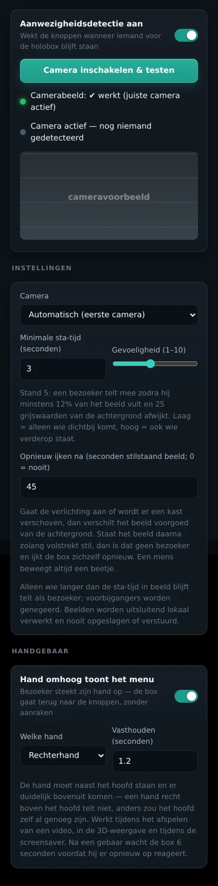
| Veld | Wat het doet | Waarom |
|---|---|---|
| Detectie aan | Zet aanwezigheidsdetectie in. | De browser vraagt eenmalig toestemming voor de camera. |
| Camera inschakelen & testen | Toont het live beeld met een statusregel. | Om te controleren dat de juiste camera de juiste kant op kijkt. |
| Camera | Welke camera, als er meerdere zijn. | Een all-in-one-pc heeft er vaak twee. |
| Minimale sta-tijd | Hoe lang iemand moet blijven staan. | Voorbijgangers tellen niet mee — anders wekt de box zichzelf de hele dag. |
| Gevoeligheid | 1 tot 10. De regel eronder rekent voor wat je instelt: bij stand 5 telt een bezoeker mee zodra hij 12 % van het beeld vult, bij stand 2 pas vanaf 28 %. | Laag = alleen wie dichtbij komt, hoog = ook wie verderop staat. Kies laag bij veel loop langs de box, hoog in een rustige hoek. |
| Opnieuw ijken na | Seconden volstrekt stilstaand beeld waarna de box zijn achtergrond opnieuw vastlegt. Standaard 45; 0 = nooit. | Gaat de verlichting aan of wordt er een kast verschoven, dan wijkt het beeld voorgoed af van de achtergrond. Zonder deze grens blijft de box de rest van de dag denken dat er iemand staat. Een mens beweegt altijd een beetje, een kast niet. |
De box blijft het zelf proberen — na 5, 10, 20, 30 en daarna elke 60 seconden — en springt meteen aan zodra je een webcam inplugt. Een USB-camera die op Windows een paar seconden ná de kioskapp opkomt, werkt daardoor alsnog. Op het podium ziet de bezoeker hier niets van; de melding staat alleen in de editor.
Handgebaar — hand omhoog toont het menu
Steekt een bezoeker zijn hand op, dan gaat de box terug naar het menu. Speelt er een video, dan stopt die. Staat de screensaver aan, dan gaat die uit. Staat hij al op het menu, dan landen de tegels opnieuw. Zonder het scherm aan te raken — handig bij een box achter glas, in een museum, of tijdens een demonstratie op afstand.
- 1Hoog genoeg — de hand komt minstens 14 % van de beeldhoogte boven de schouderlijn uit. De schouderlijn is de mediaan van alle bovenranden, dus schuift mee met hoe ver de bezoeker weg staat.
- 2Naast de romp — de hand staat duidelijk links of rechts van het midden. Dat bepaalt ook wélke hand het is: het camerabeeld is niet gespiegeld, dus de rechterhand staat links in beeld.
- 3Telt niet — recht boven het hoofd. Zonder die regel zou elk hoofd al als opgestoken hand tellen, en opende het menu zich bij iedere voorbijganger.
| Veld | Wat het doet | Waarom |
|---|---|---|
| Hand omhoog toont het menu | Zet het gebaar aan. Zet meteen ook de aanwezigheidsdetectie aan als die nog uit stond. | Het gebaar leest hetzelfde camerabeeld; zonder camera kan het niet. |
| Welke hand | Rechterhand, linkerhand, of maakt niet uit. | Eén vaste hand voorkomt dat een zwaaiende voorbijganger het menu opent. Let op: het camerabeeld is niet gespiegeld — de rechterhand van de bezoeker staat links in beeld. Daar houdt de software rekening mee. |
| Vasthouden | Hoe lang de hand omhoog moet blijven. Standaard 1,2 s. | Kort genoeg om natuurlijk te voelen, lang genoeg om een toevallige beweging niet mee te tellen. |
In het camerapaneel loopt de teller mee terwijl je het gebaar maakt —
rechterhand omhoog (0.7s van 1.2s) — zodat je bij het opleveren kunt
controleren of de camera hoog genoeg hangt. Na een gebaar wacht de box 6 seconden voordat
hij er opnieuw op reageert, anders klapt het menu heen en weer.
Het camerabeeld wordt uitsluitend lokaal verwerkt: er wordt niets opgeslagen en niets verstuurd. De software werkt op een raster van 96 × 72 grijswaarden — te grof voor een gezicht, precies genoeg voor een silhouet. Geen herkenning, geen opslag, geen netwerkverkeer.
Help
Een korte kaart in de app zelf: vier stappen om te beginnen, hoe je offline op een andere pc draait, en hoe je 4K soepel krijgt.
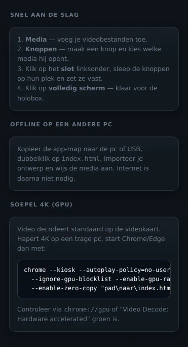
Soepel 4K
Video decodeert standaard op de videokaart. Hapert 4K op een trage pc, start Chrome of Edge dan met deze vlaggen:
chrome --kiosk --autoplay-policy=no-user-gesture-required
--ignore-gpu-blocklist --enable-gpu-rasterization
--enable-zero-copy "pad\naar\index.html"
Controleer via chrome://gpu of Video Decode: Hardware
accelerated groen is. Staat hij op software, dan trekt de processor de 4K niet
en gaat de presentatie schokken.
De bezoekerskant
Wat er gebeurt als iemand de holobox aanraakt. Drie gebeurtenissen, meer zijn het er niet.
1 · Een video afspelen
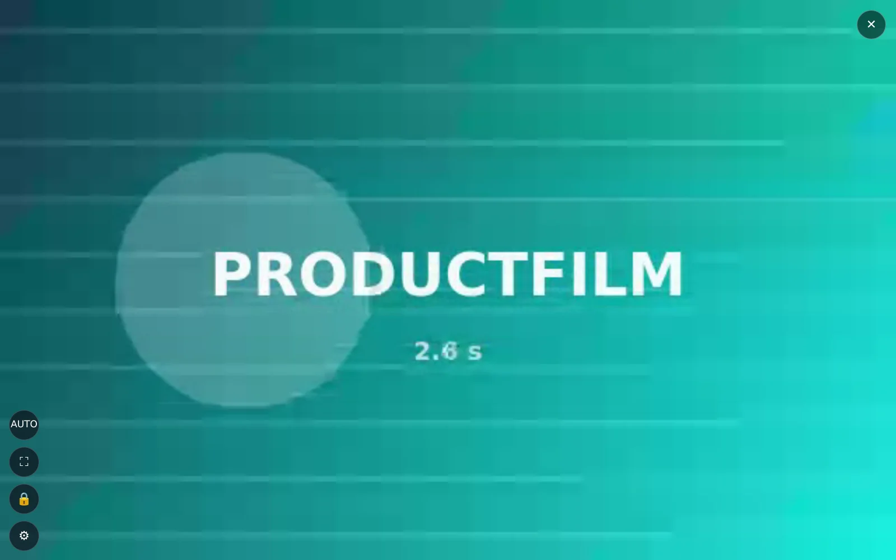
1- 1Stoppen — of de video loopt af en de knoppen komen vanzelf terug. Met “laatste beeld vasthouden” blijft het slotbeeld staan in plaats van dat het scherm zwart flitst.
2 · Een 3D-object bekijken
Slepen draait het object, knijpen zoomt. Het model draait ook uit zichzelf, op de snelheid die je bij 3D-objecten hebt gezet. Na de ingestelde rusttijd sluit de viewer vanzelf en staat de box weer klaar voor de volgende bezoeker.
3 · Naar een andere scène
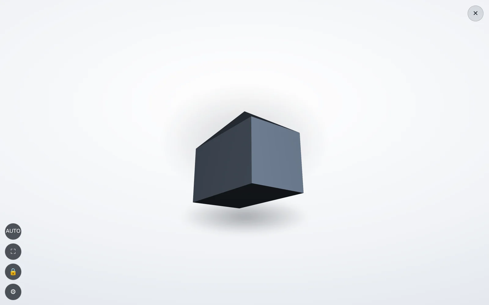
1- 1Terug — een knop met de actie “Terug”. Staat “Vegen om terug te gaan” aan, dan kan de bezoeker ook gewoon naar rechts vegen.
Publiceren
De laatste stap. De software controleert het ontwerp en zet het klaar — op deze box, of op de boxen die aan je server hangen.
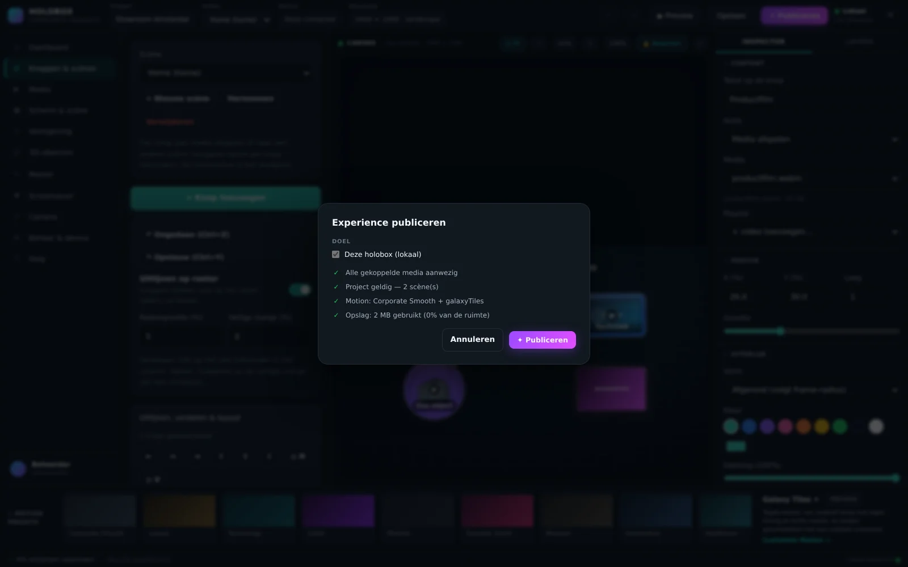
| Wat er wordt gecontroleerd | Wanneer het misgaat |
|---|---|
| Media | Een knop verwijst naar een bestand dat niet meer in de bibliotheek staat. |
| Scènes | Een knop wijst naar een scène die is verwijderd, of de homescène ontbreekt. |
| Opslag | Er is te weinig ruimte op het apparaat voor wat je wilt publiceren. |
| Doelapparaten | Je kiest zelf welke gekoppelde boxen dit ontwerp krijgen. Zonder koppeling publiceer je alleen lokaal. |
Opslaan gebeurt continu, vanzelf. Publiceren is het moment waarop je zegt: deze versie mag naar buiten. De statusbalk toont daarom twee losse dingen — of alles is opgeslagen, en wanneer je voor het laatst hebt gepubliceerd.
Waar staat alles?
Drie plekken, elk met een eigen rol. Weet je deze drie, dan weet je ook wat je moet meenemen bij een verhuizing.
| Plek | Wat erin zit | Wanneer het weg is |
|---|---|---|
localStoragehwh_studio_config_v1 |
Het hele ontwerp: scènes, knoppen, kleuren, motion, alle instellingen. Een paar honderd kilobyte. | Bij “Alles wissen”, bij het legen van de browsergegevens, of in een privévenster. |
IndexedDBhwh_studio → media |
De bestanden zelf: video's, afbeeldingen, 3D-modellen. Gigabytes. | Zelfde momenten. Media zijn het duurst om kwijt te raken — bewaar ze ook ergens anders. |
Het exportbestand.json |
Een kopie van het ontwerp, zonder media. | Nooit — dit is je back-up. Maak er een bij elke oplevering. |
Het ontwerp zit in de browser van deze computer, onder dit browserprofiel. Een andere browser, een ander Windows-account of een privévenster ziet een lege studio. Exporteer daarom na elke sessie.
Wie doet wat
Vier rollen komen deze software tegen. Ze raken elk een ander deel aan, en dat is precies waarom de tabbladen in deze volgorde staan.
| Rol | Raakt aan | Wat die nooit hoeft te openen |
|---|---|---|
| Bezoeker | Alleen het podium: tegels aanraken, 3D draaien, terugvegen. | Alles. Met een PIN komt hij de editor niet eens in. |
| Bouwer (marketing, standbouw) |
Media, Knoppen & scènes, Scherm & scène, Vormgeving, Motion, Screensaver. | Camera en Beheer & device. |
| Installateur | Camera, Beheer & device, Help, publiceren, PIN. | De vormgeving — die is al gemaakt. |
| Beheerder op afstand | Het beheerpaneel: status, schermafdruk, volume, herstart, ontwerp publiceren. | De box zelf; die staat in een andere stad. |
De eerste keer opleveren, in volgorde
- Media — zet alle video's, afbeeldingen en modellen in de bibliotheek.
- Knoppen & scènes — bouw de scènes en zet de tegels op hun plek.
- Scherm & scène — titel, achtergrond, oriëntatie, kioskmodus.
- Vormgeving — logo, lettertype, frame. Eén keer, geldt voor alles.
- Motion — kies een preset, speel hem één keer af, klaar.
- Screensaver — playlist en wachttijd.
- Camera — alleen als er een camera hangt.
- Beheer & device — koppelen aan de server, zelfonderhoud aan, PIN zetten.
- Publiceren, en daarna exporteren als back-up.
Als er iets misgaat
De klachten die in de praktijk voorkomen, met de oorzaak erachter.
| Wat je ziet | Waarschijnlijke oorzaak | Wat je doet |
|---|---|---|
| Ik kan een knop niet verslepen | Het canvas staat vergrendeld. | Klik op Bewerken in de canvasbalk, of op het slotje linksonder op het podium. |
| Een knop is leeg geworden | De media eronder is verwijderd of de koppeling is verbroken. | Selecteer de knop en kies opnieuw een bestand bij Media in de inspector. |
| Video hapert op 4K | De videokaart decodeert niet. | Controleer chrome://gpu en start met de vlaggen uit hoofdstuk 15. |
| 3D-object is traag of verschijnt niet | Het model is zwaarder dan de detail-limiet, of de textuur ontbreekt. | Zet de limiet lager, of vraag om een
.glb in plaats van .obj. |
| Website-tegel blijft leeg | De site weigert in een venster te worden geladen. | De software toont dan een hint met de mogelijkheid de site in een eigen venster te openen. Niet elke site staat inbedden toe. |
| “Nog niet gepubliceerd” blijft staan | Je hebt opgeslagen maar niet gepubliceerd. | Dat zijn twee dingen — zie hoofdstuk 17. |
| Studio is leeg na verhuizen | Het ontwerp zat in de browseropslag van de andere pc. | Importeer je .json en koppel de media opnieuw. |
| Ik kom niet in het menu op een kioskbox | Bedieningsknoppen verborgen, of er zit een PIN op. | 5× snel tikken linksboven. Daarna de PIN. |
| De achtergrondvideo blijft stil | Geluid staat uit, of de browser wacht op de eerste aanraking. | Zet het aan bij Scherm & scène (of bij Screensaver als de achtergrondmodus aanstaat). Blijft hij stil tot iemand het scherm aanraakt, gebruik dan de Windows-app. |
| Ik hoor twee dingen tegelijk | Zou niet moeten kunnen. | De achtergrond zwijgt automatisch zodra een knopvideo speelt. Hoor je het toch, controleer dan of er een tweede tabblad van de software openstaat. |
| De box denkt de hele dag dat er iemand staat | Het beeld is blijvend veranderd: de verlichting ging aan, of er is iets verschoven. | De box ijkt zichzelf na 45 s stilstaand beeld opnieuw. Gebeurt dat niet, dan staat Opnieuw ijken na op 0 of beweegt er iets in beeld (een scherm, een ventilator) — richt de camera anders. |
| Aanwezigheidsdetectie doet niets | De camera was er bij het opstarten nog niet. | De box probeert het vanzelf opnieuw en springt aan bij het inpluggen. Blijft het staan op “Geen camera gevonden”, kijk dan in Windows onder Privacy → Camera. |
| Het handgebaar werkt niet | De hand komt niet ver genoeg boven de schouders, of staat recht boven het hoofd. | Hand duidelijk naast het hoofd opsteken. Open het camerapaneel: de teller loopt mee zodra het gebaar herkend wordt. |
| Iemand wordt niet gezien | De gevoeligheid staat te laag voor de afstand. | De regel onder de schuif zegt hoeveel procent van het beeld iemand moet vullen. Zet hem hoger, of hang de camera dichterbij. |
| Het beeld staat stil | De weergave is vastgelopen. | De watchdog herstart automatisch na de ingestelde seconden. Gebeurt dat niet, dan staat zelfonderhoud uit. |
Sneltoetsen & woordenlijst
Sneltoetsen
Woordenlijst
| Woord | Wat het betekent in deze software |
|---|---|
| Podium | De bezoekerskant: het scherm dat op de holobox staat. |
| Canvas | De live weergave van het podium, midden in de editor. |
| Tegel / knop | Hetzelfde ding. “Tegel” gebruiken we voor hoe hij eruitziet, “knop” voor wat hij doet. |
| Scène | Eén schermvulling met knoppen. De homescène is het startpunt. |
| Actie | Wat er gebeurt bij aanraken: media afspelen, volgende scène, terug, home, website openen of taal wisselen. |
| Entrance | Hoe de knoppen het scherm binnenkomen. |
| Stagger | Het gat in tijd tussen twee opeenvolgende knoppen die landen. |
| Overshoot | Het stukje dat een tegel voorbij zijn eindplek schiet voordat hij tot rust komt. Eén keer, nooit twee. |
| Galaxy Tiles | Het huiseffect: tegels komen van onderaf met eigen timing en lichte rotatie. |
| Seed | Vast getal dat de willekeur stuurt. Dezelfde seed geeft altijd exact dezelfde landing. |
| Video Frame Style | De stijl van het kader om een videoknop: kleur, dikte, diepte, gloss, schaduw en gloed. |
| Kioskmodus | Bedieningsknoppen vrijwel onzichtbaar, voor publieke opstelling. |
| Watchdog | De bewaker die de presentatie herstart als het beeld stilstaat. |
| Opnieuw ijken | De box legt zijn achtergrondbeeld opnieuw vast, zodat een blijvende verandering in de ruimte niet als bezoeker blijft tellen. |
| Hoofdvolume | De schuif in Scherm & scène waar alle andere volumes onder vallen: knopvideo's, achtergrond en screensaver. |
| Handgebaar | Hand omhoog voor de camera: de box gaat terug naar het menu, zonder aanraken. |
| Device-key | De sleutel waarmee één box zich bij je beheerserver identificeert. |
Dit boek hoort bij versie 2.9.2 van de HereWeHolo Experience Manager. De bewegingswetten
achter Motion staan uitgeschreven in docs/MOTION.md; het systeem zelf kun je
in werking zien in motion/motion-system.html.